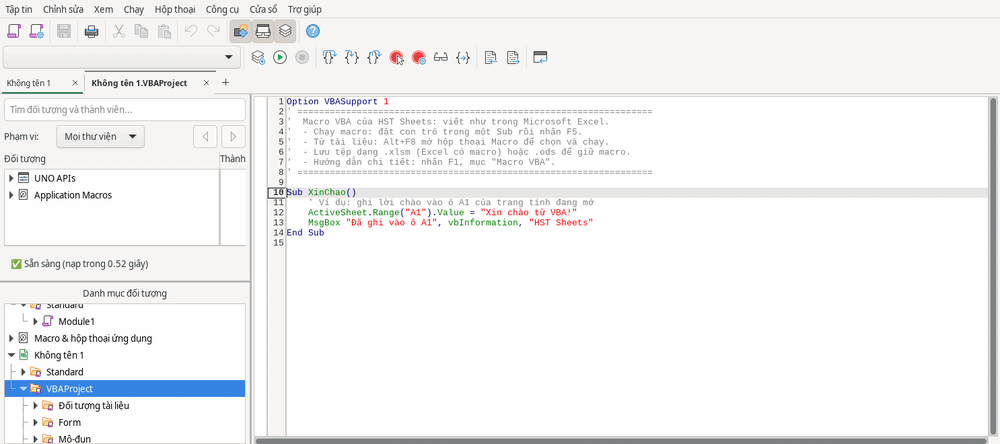
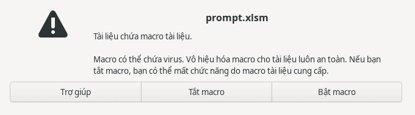

Công cụ HST
Macro VBA
Viết và sửa macro VBA trong HST Sheets và HST Writer như trong các bộ văn phòng phổ biến: Range, Cells, ActiveSheet, ActiveDocument, MsgBox… Phần lớn mã VBA thông dụng cho bảng tính và văn bản chạy được ngay; một số lệnh còn thiếu (xem bảng tương thích).
Mở trình soạn macro
- Thẻ trên dải lệnh → nút , sau các công cụ HST. Các lệnh macro trước đây ở thẻ Nhà phát triển nay nằm cùng thẻ này.
- Hoặc menu .
- Hoặc phím tắt Alt+F11, giống các bộ văn phòng phổ biến. Trên máy Mac: Option+F11; nếu phím F11 đang điều khiển âm lượng hay màn hình, giữ thêm fn: fn+Option+F11.
Với tài liệu mới, HST Office tạo sẵn mô-đun Module1 trong dự án VBAProject (Sheets) hoặc Project (Writer). Mô-đun bắt đầu bằng dòng Option VBASupport 1, tiếp theo là vài dòng hướng dẫn và macro mẫu XinChao. Hãy giữ dòng Option VBASupport 1 ở đầu mọi mô-đun: dòng này bật chế độ VBA. Nếu tệp bảng tính hoặc văn bản (.xlsm, .xls, .docm, .doc) đã có macro, trình soạn mở mô-đun có sẵn của tệp.

Module1 vừa được tạo.Macro đầu tiên trong HST Sheets
Xóa macro mẫu hoặc viết thêm bên dưới:
Sub TongCong()
Dim i As Long, tong As Double
For i = 2 To 10
tong = tong + Cells(i, 2).Value ' cột B, dòng 2 đến 10
Next i
Range("B11").Value = tong
Range("B11").Font.Bold = True
MsgBox "Tổng: " & Format(tong, "#,##0"), vbInformation
End SubWorksheetFunction.Sum(Range("B2:B10")) cho cùng kết quả. Hàm tự viết (Function) dùng được ngay trong ô, ví dụ =NHANDOI(A1).
Macro đầu tiên trong HST Writer
Sub ThayChu()
' Thay mọi chữ "Cty" bằng "Công ty" trong cả văn bản
ActiveDocument.Content.Find.Execute FindText:="Cty", _
ReplaceWith:="Công ty", Replace:=wdReplaceAll
ActiveDocument.Content.InsertAfter "Đã rà soát."
MsgBox "Văn bản có " & ActiveDocument.Paragraphs.Count & " đoạn"
End SubChạy macro
- Trong trình soạn: đặt con trỏ trong một
Subrồi nhấn F5. - Từ bảng tính hoặc văn bản: Alt+F8 (trên Mac: Option+F8) mở hộp thoại macro, giống hộp thoại macro của các bộ văn phòng phổ biến: ở cột , mở tên tài liệu, chọn mô-đun, chọn macro rồi bấm . Nút mở mã của macro, nút gán macro cho phím tắt hoặc nút.
- Trong HST Writer, chế độ chọn mở rộng (trước đây ở Alt+F8) vẫn bật được ở ô chế độ chọn trên thanh trạng thái.
Tạo biểu mẫu (UserForm)
- Mở trình soạn bằng .
- Chọn : HST Office tạo
UserForm1cùng mô-đun mã của nó, như trong các bộ văn phòng phổ biến. - Kéo nút, ô nhập từ hộp công cụ vào biểu mẫu. Viết mã sự kiện trong mô-đun
UserForm1, ví dụPrivate Sub CommandButton1_Click(). - Hiện biểu mẫu từ một macro:
UserForm1.Show.
.ods/.odt. Khi lưu .xlsm, .xls, .docm, .doc, biểu mẫu được ghi vào tệp nhưng chưa chắc dùng được trong phần mềm văn phòng khác: HST Office sẽ nhắc khi lưu. Hãy giữ thêm một bản .ods/.odt. Biểu mẫu mới lưu vào định dạng cũ .xls/.doc chưa được kiểm tra trên phần mềm văn phòng khác. Trên Windows không đặt tiếng Việt cho ngôn ngữ cho chương trình không dùng Unicode, tiêu đề cửa sổ biểu mẫu trong trình soạn VBA có thể hiện chữ sai.Lưu tệp để giữ macro
| Lưu dạng | Macro |
|---|---|
.xlsm (bảng tính có macro) | Giữ macro, kể cả macro viết mới hoặc vừa sửa trong HST Sheets. Sự kiện Workbook_Open, Worksheet_Change vẫn chạy sau khi lưu. |
.docm (văn bản có macro) | Tệp tạo bằng phần mềm khác giữ nguyên macro gốc. Nếu bạn sửa macro trong HST Writer, HST Office hỏi trước khi lưu vì phần sửa không được lưu vào tệp .docm; hãy lưu bản .odt để giữ. Macro viết mới trong HST: chưa kiểm chứng trên phần mềm văn phòng khác. |
.ods, .odt | Giữ macro. |
.xls | Giữ macro và UserForm. |
.doc | Giống .docm: tệp tạo bằng phần mềm khác giữ nguyên macro gốc; macro viết mới trong HST chưa kiểm chứng trên phần mềm văn phòng khác. |
.xlsx, .docx | Không có macro (đúng chuẩn của định dạng này). |
Tài liệu có macro: hộp tự đề xuất định dạng giữ được macro. Mã VBA trong HST Writer và HST Sheets: .docm, .xlsm. Macro Basic thường và macro viết trong HST Slides: .odt, .ods, .odp, vì tệp .docm, .xlsm chỉ lưu dự án VBA. Nếu vẫn lưu vào định dạng không giữ được macro (ví dụ .docx), HST Office hỏi trước: hoặc .
ChrW().Hỏi trước khi chạy macro trong tệp
Macro có thể chứa mã độc. Khi mở một tệp có macro (.xlsm, .docm…), HST Office luôn hỏi trước khi chạy:

- : mở tệp, không chạy macro nào. Bạn vẫn xem và sửa được mã trong trình soạn.
- : macro của tệp được chạy, kể cả
Workbook_Open. - Muốn đổi mức bảo mật: . Mức mặc định của HST Office là : luôn hỏi trước khi chạy macro trong tệp từ nguồn chưa tin cậy, không bao giờ tự chạy ngầm. Không nên chọn . Macro bạn tự viết trong tài liệu mới chạy ngay, không cần hỏi.
Bảng tương thích
Kết quả kiểm tra tự động trên HST Office 1.0.0-beta.5: mỗi dòng là một đoạn mã VBA chạy trong tài liệu mới.
HST Sheets (mã VBA cho bảng tính): 43/43 trường hợp chạy được
| Mã VBA | Kết quả |
|---|---|
Range("A1").Value, Cells(hàng, cột), Offset, Resize, Address | Chạy được |
Worksheets(1), Worksheets("tên"), ActiveSheet, ThisWorkbook, Worksheets.Add | Chạy được |
Range.Select, Selection | Chạy được |
Vòng lặp For…Next, For Each ô In Range; mảng từ Range.Value | Chạy được |
Formula, WorksheetFunction.Sum/Max/CountIf/VLookup | Chạy được |
MsgBox, InputBox | Chạy được |
Font, Interior.Color, NumberFormat, Borders, Merge, độ rộng cột/chiều cao dòng | Chạy được |
End(xlDown), UsedRange, Copy Destination:=, ClearContents, Sort, AutoFilter | Chạy được |
Names.Add, Cells.Find, Replace, AddComment, Shapes.AddShape, ChartObjects.Add | Chạy được |
On Error Resume Next, On Error GoTo, Err.Raise, Split, Format, Collection | Chạy được |
Hàm tự viết dùng trong ô (=NHANDOI(A1)), Call, Application.ScreenUpdating | Chạy được |
Sự kiện Workbook_Open, Worksheet_Change (cả sau khi lưu .xlsm) | Chạy được |
Scripting.Dictionary (CreateObject, New Dictionary): Add, d(khóa) = giá trị, Exists, Remove, Keys, Items, For Each, CompareMode = vbTextCompare (khóa tiếng Việt không phân biệt hoa thường), lỗi 457 khi thêm trùng khóa | Chạy được |
Đối tượng COM khác của Windows (ví dụ ADODB) | Hạn chế |
UserForm soạn mới trong trình soạn (UserForm1.Show, Unload, sự kiện nút bấm) | Chạy được |
Lưu UserForm vào .xlsm/.xls | Hạn chế: chưa kiểm chứng trên phần mềm bảng tính khác |
HST Writer (mã VBA cho văn bản): 28/28 trường hợp chạy được
| Mã VBA | Kết quả |
|---|---|
ActiveDocument.Content, ActiveDocument.Range(đầu, cuối), .Text | Chạy được |
Range.InsertAfter, Range.InsertBefore | Chạy được |
Selection.TypeText, TypeParagraph, HomeKey, EndKey, InsertBreak | Chạy được |
Paragraphs.Count, Paragraphs(n).Range, Paragraph.Alignment, Style, For Each p In ActiveDocument.Paragraphs | Chạy được |
Find.Execute: tìm (chọn chữ tìm thấy) và thay thế Replace:=wdReplaceAll | Chạy được |
Tables.Add, Rows.Count, Columns.Count, Table.Cell(h, c).Range.Text | Chạy được |
Words, Sentences (của tài liệu, Range, Selection; dấu câu và dấu ngắt đoạn là từ riêng, như trong các bộ văn phòng phổ biến), Range.Bold, Range.Italic, Selection.ClearFormatting, Bookmarks.Add, Bookmarks("tên").Range | Chạy được |
Sections(1).Headers(wdHeaderFooterPrimary), ListFormat.ApplyBulletDefault | Chạy được |
Font.Bold, Font.Size, BuiltInDocumentProperties, MsgBox | Chạy được |
Scripting.Dictionary trong macro của Writer (đếm từ, khóa tiếng Việt) | Chạy được |
Sự kiện Document_Open khi mở tệp .odt đã lưu bằng HST | Chạy được |
InlineShapes.AddPicture, Width/Height, LockAspectRatio; Comments.Add, Comments(n).Range, Scope, Author | Chạy được |
Fields.Add (trang PAGE, tổng số trang NUMPAGES, ngày DATE, giờ TIME), Fields.Update (cập nhật cả mục lục) | Chạy được |
UserForm soạn mới trong trình soạn (UserForm1.Show, Unload, sự kiện nút bấm) | Chạy được |
Lưu UserForm vào .docm/.doc | Hạn chế: chưa kiểm chứng trên phần mềm văn phòng khác |
Scripting.Dictionary; Với tệp quan trọng, hãy giữ một bản gốc trước khi lưu đè.